The Region-2 problem, the extremum-seeking machinery built for it, and five open questions
Robot Control Lab · Systems Engineering · UT Dallas
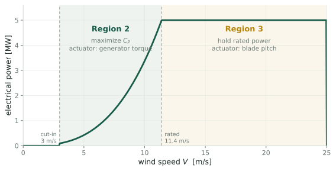
Region 3: above rated
There is more wind than the machine can use. Throw the excess away and hold rated power. A setpoint, an error signal and a PI controller.
Region 2: below rated
Take everything the wind offers. There is no setpoint, only an efficiency to maximize. This is the only regime containing an extremum to seek.
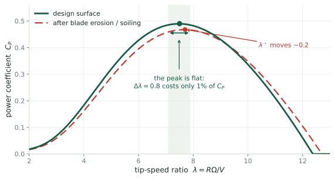
With the blades held at their design pitch, the rotor’s efficiency depends on one number: the tip-speed ratio \(\lambda = R\Omega/V\), blade tip speed divided by wind speed. Hold \(\lambda\) at \(\lambda^\star\) and you capture the most power available.
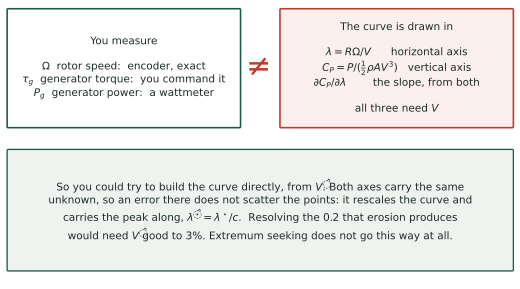
Both coordinates of the hill are written in terms of \(V\), the wind speed actually reaching the rotor, which is exactly what a turbine cannot measure. So this is the route extremum seeking declines to take.
How the controller finds the peak without measuring where it is.
The rotor is one rigid body, so what governs it is
\[I\dot\Omega \;=\; \tau_{\text{aero}} - \tau_g, \qquad \tau_{\text{aero}} = \tfrac12\rho\pi R^3 V^2\,C_Q(\lambda), \qquad \tau_g = k\Omega^2\]
Put \(\dot\Omega = 0\), substitute \(\Omega = \lambda V/R\), and divide through by \(V^2\). Both \(V\) and \(\Omega\) disappear, leaving a condition on \(\lambda\) alone:
\[\boxed{\;\frac{C_P(\lambda)}{\lambda^3} \;=\; \frac{2k}{\rho\pi R^5}\;}\]
So \(\dot\Omega = 0\) does not leave the speed free to have drifted anywhere. The left side is a function of \(\lambda\) whose shape is set by the blade geometry; the right side is a genuine constant, the one you pick with \(k\). The rotor can only rest where the two meet.
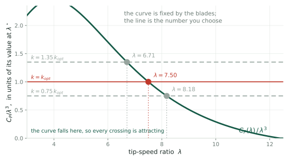
Raise \(k\) and the line rises, so the crossing slides left to a lower \(\lambda\). Nothing here needed the wind speed, and nothing needed a measurement.
Resting there is not the same as being drawn there. Write the net torque as a function of the state, \(I\dot\Omega = F(\Omega)\) with
\[F(\Omega) \;=\; \tfrac12\rho\pi R^3 V^2\,C_Q\!\left(\frac{R\Omega}{V}\right) - k\Omega^2\]
A small perturbation \(\delta = \Omega - \Omega_{eq}\) obeys \(I\dot\delta = F'(\Omega_{eq})\,\delta\), so it decays exactly when \(F'(\Omega_{eq}) < 0\). Substituting the equilibrium relation collapses that to a statement about the curve alone:
\[F'(\Omega_{eq}) < 0 \qquad\Longleftrightarrow\qquad \frac{d}{d\lambda}\!\left(\frac{C_P}{\lambda^3}\right) < 0 \qquad\Longleftrightarrow\qquad \frac{d \ln C_P}{d \ln \lambda} < 3\]
At the peak \(C_P' = 0\), so the middle expression is \(-3C_P^{\max}/\lambda^4\), negative for any turbine. The design point is always attracting, whatever the blades look like.
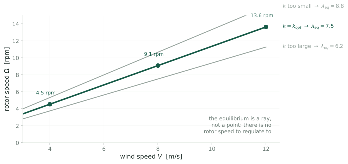
The crossing gives \(\lambda_{\text{eq}}(k)\), with no \(V\) in it. Convert back through \(\lambda = R\Omega/V\):
\[\Omega_{eq}(V) \;=\; \frac{\lambda_{\text{eq}}(k)}{R}\,V\]
So the crossing is this ray, in rotor-speed coordinates: one point there, one line here, every point on it the same \(\lambda\). The controller never rejects the wind. It makes that line an attracting manifold and lets the wind slide the machine along it.
What we have
A single scalar knob \(k\), and a monotone map from \(k\) to the tip-speed ratio the machine settles at.
What we want
The \(k\) that lands us on the peak. The factory value is wrong at commissioning and gets worse as the blades age.
Find the maximum of a function you cannot evaluate, by turning a knob and watching a noisy meter. That is extremum seeking control, and it is what the last decade of work at UTD has been about.
Estimate a derivative you cannot measure by wiggling the input.
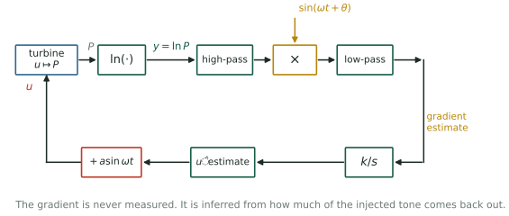
Add a slow sinusoid \(a\sin\omega t\) to the knob. If the output wiggles in phase, you are on the uphill side; out of phase, the downhill side. Multiply and average, and what survives is proportional to the slope.
Power is proportional to the cube of the wind speed, so the gradient of power is too, and the wind varies by 3:1 across Region 2. A loop tuned at 8 m/s is 27 times too slow at 4 m/s and 27 times too aggressive at 12 m/s.
Rotea’s 2017 observation is one line. Since \(\ln P = \ln(\tfrac12\rho A) + 3\ln V + \ln C_P(u)\), and the wind term does not depend on \(u\):
\[\frac{\partial \ln P}{\partial u} \;=\; \frac{1}{C_P}\frac{\partial C_P}{\partial u}\]
Feed the algorithm \(\ln P\) instead of \(P\) and the loop bandwidth becomes \(\nu_c = (\kappa/C_P^{\max})\,|\partial^2 C_P/\partial u^2|\), free of both the wind speed and the air density. Tune it once; it works everywhere.
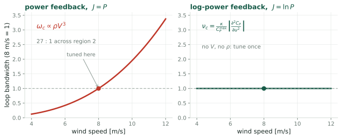
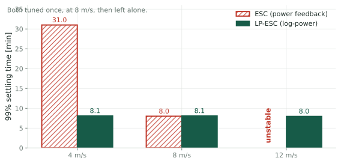
Ciri, Leonardi & Rotea 2019
Large-eddy simulation of the full flow around an NREL 5 MW rotor, with shear and 10% turbulence. No analytic gradient anywhere.
The result
Log-power holds 8 minutes across a 3:1 wind range. Plain ESC is four times slower at the bottom and goes unstable at the top.
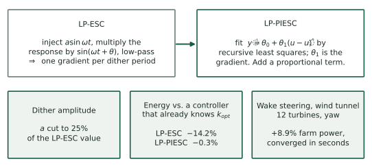
Replace demodulation with recursive least squares on \(\dot y = \theta_0 + \theta_1(u-\hat u)\) and add a proportional term. The gradient \(\theta_1\) now comes with a covariance matrix \(\Sigma\) that the algorithm already propagates, and that none of these papers reports.
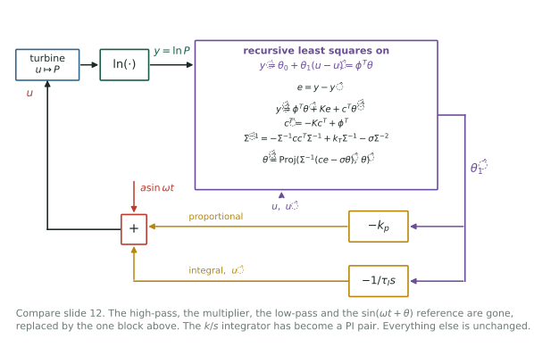
The whole demodulation chain is gone: no multiplier, no high-pass, no low-pass, no phase angle. The gradient is \(\hat\theta_1\), read directly out of a least-squares fit to \(\dot y = \theta_0 + \theta_1(u - \hat u)\).
The local model is affine in the distance from the current estimate:
\[\dot y \;=\; \theta_0 + \theta_1\,(u - \hat u) \;=\; \phi^{T}\theta, \qquad \phi = \begin{bmatrix} 1 \\ u - \hat u\end{bmatrix}, \qquad \theta = \begin{bmatrix}\theta_0 \\ \theta_1\end{bmatrix}\]
so \(\phi\) and \(\theta\) are two-vectors, and \(\theta_1\) is the gradient we are after. Everything else in the box has a shape forced by these:
vectors in \(\mathbb{R}^2\) \(\phi\), \(\theta\), \(\hat\theta\), and \(c\)
scalars \(y\), \(\hat y\), \(e\), and the constants \(K\), \(k_T\), \(\sigma\)
\(2\times2\) matrices \(\Sigma\) and \(\Sigma^{-1}\)
The obstacle: the model is written in \(\dot y\), and \(\dot y\) is not measured. Differentiating a turbulent power signal to get it would be hopeless.
Predict \(y\) with \(\dot{\hat y} = \phi^{T}\hat\theta + Ke + c^{T}\dot{\hat\theta}\) and let \(\tilde\theta = \theta - \hat\theta\). Subtracting from \(\dot y = \phi^T\theta\),
\[\dot e \;=\; \phi^{T}\tilde\theta - Ke - c^{T}\dot{\hat\theta}\]
Now define \(\eta = e - c^{T}\tilde\theta\) and differentiate, using \(\dot{\tilde\theta} = -\dot{\hat\theta}\) and \(\dot c^{T} = -Kc^{T} + \phi^{T}\):
\[\dot\eta = \underbrace{\phi^{T}\tilde\theta - Ke - c^{T}\dot{\hat\theta}}_{\dot e} \;-\;\underbrace{(-Kc^{T} + \phi^{T})\tilde\theta}_{\dot c^{T}\tilde\theta} \;+\;\underbrace{c^{T}\dot{\hat\theta}}_{-c^{T}\dot{\tilde\theta}} \;=\; -K\big(e - c^{T}\tilde\theta\big) \;=\; -K\eta\]
Everything cancels but \(-K\eta\). So \(\eta \to 0\) exponentially, which means \(e \to c^{T}\tilde\theta\): the measurable error becomes the regressor \(c\) dotted with the parameter error. The odd \(c^{T}\dot{\hat\theta}\) term in the predictor is there for exactly this, since it is what cancels \(c^{T}\dot{\tilde\theta}\).
Rearranging \(e = c^{T}\theta - c^{T}\hat\theta\) and defining \(z := e + c^{T}\hat\theta\), we get \(z = c^{T}\theta\): known regressor, computable observation, unknown parameter. Fit it with forgetting and a penalty on the size of \(\hat\theta\):
\[J(t,\hat\theta) = \int_0^t e^{-k_T(t-s)}\Big[\,\big|z - c^{T}\hat\theta\big|^2 \;+\; \sigma\big|\hat\theta\big|^2\,\Big]ds\]
Setting \(\partial J/\partial\hat\theta = 0\) gives the normal equations \(\Sigma\hat\theta = b\), where, with \(w = e^{-k_T(t-s)}\),
\[\Sigma = \underbrace{\int_0^t w\,cc^{T}ds}_{A} \;+\; \sigma\underbrace{\int_0^t w\,ds}_{m}I, \qquad b = \int_0^t w\,c\,z\;ds\]
\(\Sigma\) is the information matrix of a ridge-regularized least squares, and it is the \(\Sigma\) of the block diagram. The next slide shows that both places \(\sigma\) appears in the algorithm come from the one penalty written here.
The \(\Sigma\) recursion. Since \(\dot A = cc^{T} - k_TA\) and \(\dot m = 1 - k_Tm\),
\[\dot\Sigma = \big(cc^{T} - k_TA\big) + \sigma\big(1 - k_Tm\big)I = cc^{T} - k_T\underbrace{\big(A + \sigma mI\big)}_{\Sigma} + \sigma I\]
The parameter update. Differentiate \(\hat\theta = \Sigma^{-1}b\), substitute \(\dot\Sigma\) and \(\dot b = cz - k_Tb\), and the \(k_T\) terms cancel:
\[\dot{\hat\theta} = -\Sigma^{-1}\dot\Sigma\,\hat\theta + \Sigma^{-1}\dot b = \Sigma^{-1}c\big(z - c^{T}\hat\theta\big) - \sigma\Sigma^{-1}\hat\theta = \Sigma^{-1}\big(ce - \sigma\hat\theta\big)\]
That is why \(c\) multiplies \(e\), and why the same \(\sigma\) appears twice. It is not a robustness patch bolted on in two places: it is one ridge penalty, showing up once through \(\Sigma\) and once through the shrinkage of \(\hat\theta\).
What LP-PIESC assumes
That \(\dot y\) is affine in \((u - \hat u)\), that the regressor stays persistently exciting, and that you can bound the parameters in advance for the projection.
What demodulation assumes
That the plant is roughly static at one frequency and the peak is locally unimodal. No model structure at all.
And the count goes the wrong way. LP-ESC has six parameters: \(a\), \(\omega\), \(\theta\), two cutoffs, \(k\). LP-PIESC has seven: \(a\), \(\omega\), \(k_T\), \(K\), \(\sigma\), \(k_p\), \(\tau_I\), and Rotea’s 2024 multi-row paper says all but two were set by trial and error.
Which is exactly the complaint we were given. The fast algorithm is the one that “takes too long to tune its parameters.”
Solved
Consistency across wind speed. The logarithm removes the \(V^3\) dependence exactly, in theory, in LES, and in the tunnel.
Solved
Speed. LP-PIESC converges fast enough that the search costs 0.3% of energy rather than 14%.
Not solved
Everything to do with noise. “The enemy is process noise”, and none of these papers reports a variance.
Extremum seeking works well when the process noise is negligible. Otherwise you must average, and averaging costs convergence time. That trade-off has not been quantified for this problem.
Two of them closed under inspection. Q1 turned out not to be a control problem and Q2 was fixed in 2017. What is left is Q3, Q4 and Q5.
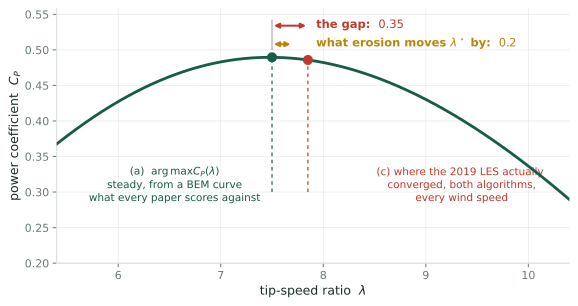
| offset from \(\lambda^\star = 7.5\) | |
|---|---|
| [CLR19] Table 4, shear \(+10\%\) TI | \(+0.22\) to \(+0.35\) |
| [CLR19] Table 3, uniform inflow | \(+0.10\) to \(+0.25\) |
| finite-difference bias, computed | \(-0.013\) |
| turbulent peak shift, computed | \(+0.005\) to \(+0.037\) |
Most of the gap is already there in inflow with no turbulence, where neither computed candidate can act, and the scatter is bounded at \(\sigma_\lambda \lesssim 0.14\). What is left is the reference: design \(\lambda^\star\) is a blade-element number, the LES rotor is actuator-line. Closed as a control question, open as a modeling one. Worked through in the Q1 deck.
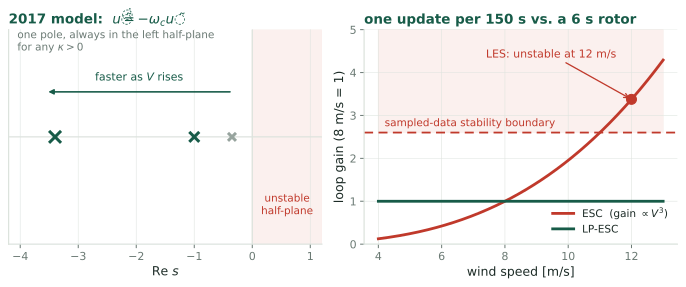
[R17] Eq. 8 reduces the loop to \(\dot{\tilde u} = -\omega_c\tilde u\) with \(\omega_c \propto \rho V^3\). One pole, negative real, for any gain: it cannot go unstable. [CLR19] report plain ESC unstable at 12 m/s, in uniform inflow and again in turbulence.
[R17] p. 4506 names the effect and cannot model it: “an increase in crossover frequency implies a decrease of the stability margins.” A first-order lag has no margin to lose. The missing element is that the loop is sampled: one update per 150 s dither period, so \(\tilde u_{n+1} = (1-K)\tilde u_n\) with \(K = \kappa_{\text{eff}}|J''|\), giving \(0 < K < 2\) where the continuous model gives no bound at all. Since \(K \propto V^3\), high wind walks across it.
Closed, and closed by the existing fix. The logarithm removes the \(V^3\) exactly, so LP-ESC holds one \(K\) at every wind speed. Nor is \(K<2\) a speed ceiling: \(K=1\) is deadbeat in one update. What survives is that \(K = \kappa_{\text{eff}}|J''|\) still needs a curvature nobody measures, which is Q4.
Two things are true and encouraging. \(\tau_{\text{aero}}\) is observable from the encoder alone, no wind sensor and no \(C_P\): augment it as a state on \(I_{\text{eff}}\dot\Omega = \tau_{\text{aero}} - \tau_g\) and \([C;CA]\) has rank 2. And turbulence already moves \(\lambda\) about as far as the probe does, \(\sigma_\lambda = 0.41\) against \(0.34\), verified in simulation.
Neither helps. Given a candidate curve, each instant supplies one equation and one unknown \(V(t)\), so the curve is unconstrained pointwise. The degeneracy is not a direction, it is the whole function space.
| posited curve | solvable | implied mean \(V\) | implied TI | corr. with true \(V\) |
|---|---|---|---|---|
| true | \(100\%\) | \(8.00\) | \(9.3\%\) | \(1.0000\) |
| peak flattened \(30\%\) | \(100\%\) | \(7.99\) | \(9.3\%\) | \(0.9999\) |
A curve that is simply wrong reproduces the record exactly, with an implied wind indistinguishable from the real one. This is why extremum seeking exists. A known excitation is not a convenience; it is the only thing that breaks the degeneracy. The answer to Q3 is yes, and structurally so.
Look again at the result of Rotea (2017):
\[\nu_c \;=\; \frac{\kappa}{C_P^{\max}}\left|\frac{\partial^2 C_P}{\partial u^2}(u_o)\right|\]
Choosing the gain \(\kappa\) to hit a target settling time requires the curvature at the peak, currently taken from a design curve that the LES says is wrong by 10% in \(C_P\). The gain calibration is not self-consistent, and “it takes too long to tune” is partly a symptom of that.
The curvature also sets the terminal scatter, \(\sigma_\lambda \approx \sigma_{\hat g}/|H|\), and the energy lost to mistuning is quadratic in \(\sigma_\lambda\). The same number sets the gain, the achievable accuracy and the cost of missing.
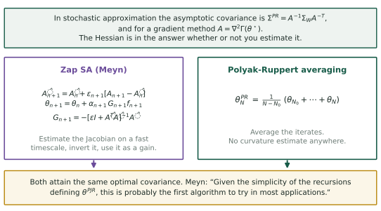
Meyn does not estimate the Hessian in the ESC papers. It appears in the analysis, as \(A = \nabla^2\Gamma(\theta^\star)\) in the asymptotic covariance. Where he does estimate it, in Zap SA, it is a two-timescale Jacobian estimate used as a matrix gain.
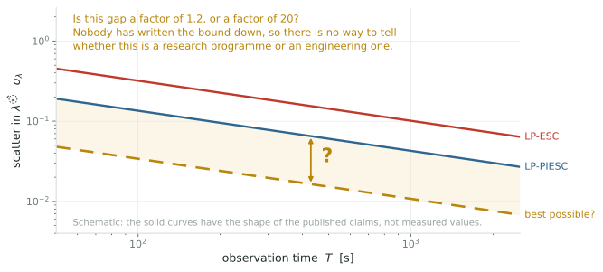
Given a turbulence spectrum, an observation time and a fatigue budget, how well can anyone locate \(\lambda^\star\)? Nobody has written the bound down.
In classical stochastic approximation
Noise is pure nuisance. It corrupts the measurement and you average it away.
Here
Turbulence is simultaneously the noise and the excitation. It is what corrupts the gradient estimate and what sweeps the rotor across the curve for free.
Both sides are now measured, and they are the same size:
| \(\sigma_\lambda\) contributed | |
|---|---|
| turbulence, through the rotor high-pass at \(0.029\) Hz | \(0.41\) |
| the probe, at the published \(a = 13.6\%\) of \(k_{\text{opt}}\) | \(0.34\) |
The excitation the wind supplies for free is comparable to the one the controller pays for. That is what made Q3 worth asking. It still fails, but on identifiability rather than on signal strength: an unknown wind absorbs any curve you propose, so excitation of unknown magnitude cannot substitute for excitation you chose.
Open the loop. Hold the torque gain at a series of fixed values, run each long enough to average the turbulence, and measure the simulator’s own \(C_P(\lambda)\). Then ask where its peak is.
Why this one
Every published offset is scored against a blade-element \(\lambda^\star = 7.5\). Q1 showed the offset survives in inflow with no turbulence, so the reference is the only candidate left. This measures it directly.
What it costs
No new machinery, no closed loop, a few days of compute. And the same runs give \(\sigma_\lambda\) at each gain, which is the \(K_v\) nobody can currently predict.
Note the earlier obvious experiment, sweeping the dither amplitude to look for an \(a^2\) scaling in the offset, is not worth running: the predicted effect is \(0.013\) against a seed spread larger than that.
The algorithms work. What is missing is the statistics of the quantity they compute.
What exists
A model-free loop, consistent across wind speed, with results from LES, a wind tunnel and a field test.
What does not
A variance for the gradient estimate, a reference the simulations can honestly be scored against, and a performance bound.
| verdict | |
|---|---|
| Q1 estimand | closed; the offset is in the reference, not the algorithm. A measurement, not a program |
| Q2 stability limit | closed; sampling explains it and the \(\ln\) of 2017 already fixes it |
| Q3 is the dither needed | closed; an unknown wind absorbs any curve, so a known probe is the only thing that identifies one |
| Q4 matrix gain | open, and simulated. The curvature does leave the loop gain |
| Q5 performance bound | untouched |
[R17] M. A. Rotea, Logarithmic power feedback for extremum seeking control of wind turbines, IFAC-PapersOnLine 50(1) (2017) 4504–4509. doi:10.1016/j.ifacol.2017.08.381
[CLR19] U. Ciri, S. Leonardi & M. A. Rotea, Evaluation of log-of-power extremum seeking control for wind turbines using large eddy simulations, Wind Energy 22 (2019) 992–1002. doi:10.1002/we.2336
[KR22] D. Kumar & M. A. Rotea, Wind turbine power maximization using log-power proportional-integral extremum seeking, Energies 15 (2022) 1004. doi:10.3390/en15031004
[KR24] D. Kumar & M. A. Rotea, Optimal tip-speed ratio for degraded blades, Wind Energy Science 9 (2024) 2133–2146. doi:10.5194/wes-9-2133-2024
[RKAJ24] M. A. Rotea, D. Kumar, E. J. Aju & Y. Jin, Multi-row extremum seeking for wind farm power maximization, J. Phys. Conf. Ser. 2767 (2024) 032043. doi:10.1088/1742-6596/2767/3/032043
[MGR24] S. P. Mulders, N. Gallo & M. A. Rotea, Analysis of extremum seeking control for wind turbine torque controller optimization by aerodynamic and generator power objectives, ACC (2024). arXiv:2407.08059
[GKN12] A. Ghaffari, M. Krstić & D. Nešić, Multivariable Newton-based extremum seeking, Automatica 48 (2012) 1759–1767. doi:10.1016/j.automatica.2012.05.059
[S00] J. C. Spall, Adaptive stochastic approximation by the simultaneous perturbation method, IEEE Trans. Automat. Contr. 45 (2000) 1839–1853. PDF
[LM23] C. Lauand & S. Meyn, Quasi-stochastic approximation: design principles with applications to extremum seeking control, IEEE Control Systems Magazine 43 (2023). doi:10.1109/MCS.2023.3291884
[A22] N. J. Abbas et al., A reference open-source controller for fixed and floating offshore wind turbines, Wind Energy Science 7 (2022) 53–73. doi:10.5194/wes-7-53-2022
[J09] J. Jonkman, S. Butterfield, W. Musial & G. Scott, Definition of a 5-MW reference wind turbine, NREL/TP-500-38060 (2009). PDF · [IEC] IEC 61400-1 ed. 3, normal turbulence model.
← Research Home · Wind Turbine Control